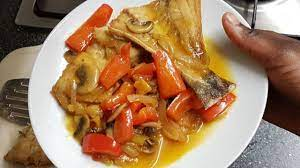

Makauabu and Ndunda

Makayabu is the Lingala word for Bacalhau (Portuguese) or Bacalao (Spanish) also known as dried and salted cod.
Salting food is probably the world’s oldest known food preservation method, which is probably the reason why
dried and salted cod has been over centuries one of the most used ingredients in almost every part of the globe.
Ingredients
- 350 g of salted cod cut into chunks
- ½ sliced cabbage
- 1 diced white onion
- 1 diced green bell pepper
- 1 diced orange bell pepper
- 2 garlic cloves
- 1 red scotch bonnet pepper
- Bay leaves
- 2 white Zucchinis
- 1 eggplant
Steps
- Rehydrate the salt cod in cold water overnight. By soaking it in cold water, it also helps the fish to desalinate otherwise it would be too salty and impossible to eat.
- Over medium eat, in a sautéed pan, fry the fish until it’s golden and brown. I like to fry the fish with garlic and bay leaves to add more flavor to the fish. Once golden and brown, remove the fish from the pan and set a side.
- In the same pan, keep about ¼ cup of the oil used to fry the fish, add onion and sauté until it softens. Add pieces of zucchinis and eggplants. Cook for about 2-3 minutes.
- Add the cabbage and season with stock cubes. Stir and add the scotch bonnet pepper. And cover for 5 minutes in order to let the cabbage soften.
- After 5 minutes, add the bell peppers, stir and cover for another 5 minutes.
- Once the vegetables are cooked to your liking, add the fish and rectify the seasoning if necessary. Let it cook, uncover for 2-3 minutes and turn off the heat.
- Serve with boiled or fried cassava.